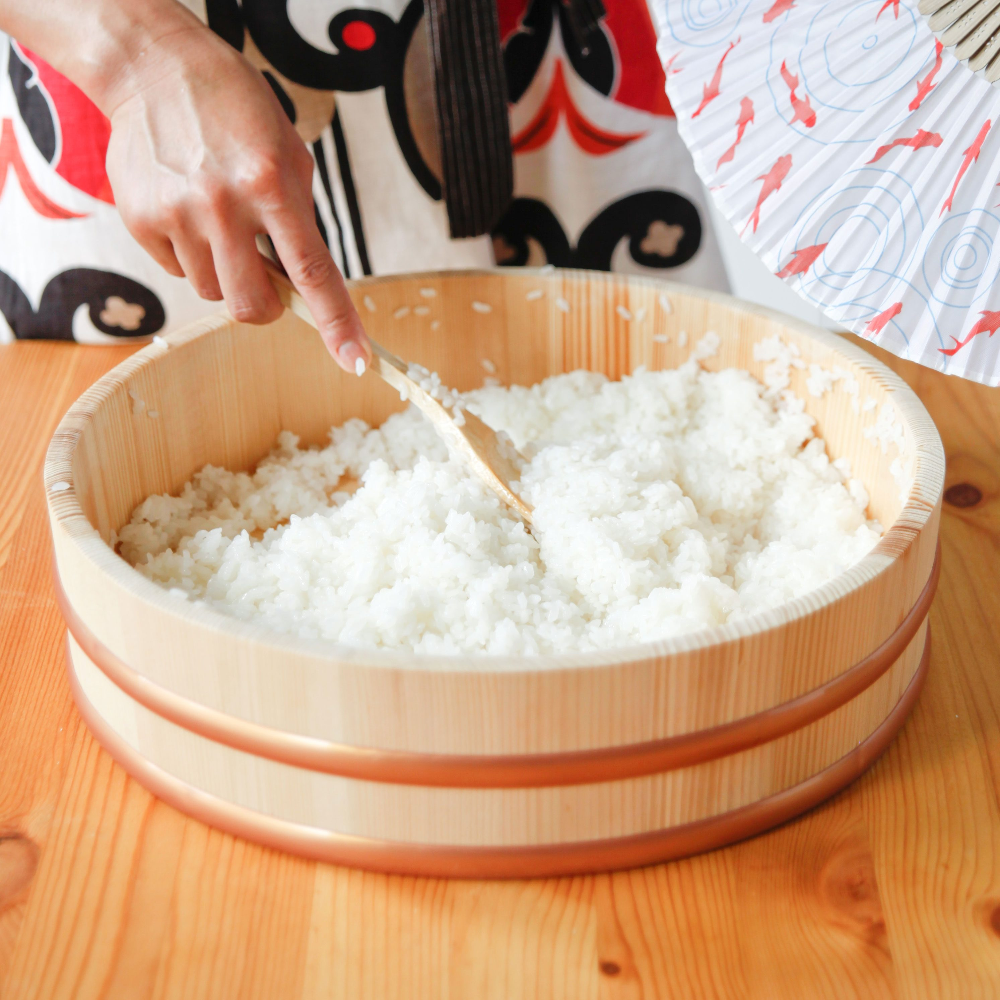

Sushi Rice

Homemade sushi rice done right!
Making rice for sushi is just as important as sourcing the right fish. Done correctly, it will take your dish to the next level.
You'll need a few things to get started including a large bowl, wooden spoon, fan, and someway to cook the rice, a rice cooker being the preferred method.
Ingredients
- 2 cups rice
- 5ml rice vinegar
- 1 tablespoon sugar
- 1 teaspoon salt
Steps
- Begin by measuring out 2 cups of rice and washing with cold water 3-4 times, until the water runs clear.
- Add rice to pot and 2 cups clean water, allow to soak for 30 minutes
- Cook the rice (about 20 minutes)
- Heat 5ml rice vinegar in saucepan over stove
- When hot, add 1 tablespoon sugar and 1 teaspoon salt. Stir.
- When rice is done, place in large bowl. Gently add 1/3 of vinegar to rice.
- Quickly fan rice to cool while gently stirring and "cutting" rice.
- Repeat steps 6 and 7 until all vinegar has been used (about 10-15 minutes).